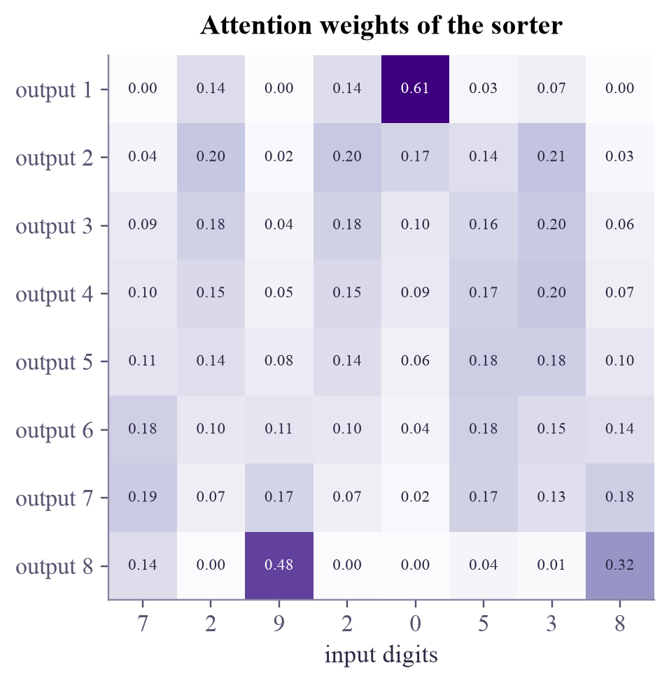

the attends the 0.25 cat 0.25 sat 0.25 down 0.25 -> [0.3 0.3] cat attends the 0.16 cat 0.33 sat 0.33 down 0.19 -> [0.36 0.36] sat attends the 0.04 cat 0.87 sat 0.06 down 0.04 -> [0.87 0.07] down attends the 0.03 cat 0.06 sat 0.81 down 0.10 -> [0.08 0.83] "sat" looks for a thing and finds "cat"; "down" looks for an action and finds "sat".
Machine Learning
 about 11 min
about 11 min ml-w9d5.ipynb
ml-w9d5.ipynb
Attention and transformers
Instead of passing a memory along step by step, let every position look straight at every other one. That idea, attention, is the heart of the transformer, and of every large language model.
In this lesson you will
- Compute attention by hand: queries, keys, values, softmax
- Explain why attention needs position information, and what a transformer block contains
- Train a tiny transformer in PyTorch and read its attention map
Warm-up
1 minSkip the chain

Yesterday, information from step 1 had to survive 50 steps of an LSTM, and it barely did. What if position 50 could simply look back at position 1, directly, in one step? That's attention. Built into the transformer (2017), it now runs the chatbots, translators and code assistants you use every day.
Big idea
4 minQueries, keys and values
Every position in the sequence makes three vectors from its input, with three learned linear layers:
- a query : what am I looking for?
- a key : what can I be found by?
- a value : what do I pass on if someone attends to me?
Position compares its query with every key using a dot product (a similarity, like the kernels of week 4), turns the scores into weights with softmax (week 3), and takes the weighted average of the values:
For all positions at once: . The keeps the scores from growing with the vector length , so softmax doesn't become too sharp too early. When queries, keys and values all come from the same sequence, it's called self-attention. Every position reaches every other in one step, and all positions are computed in parallel, which is why transformers train so fast on modern hardware.
Two things complete the picture:
- Positions. Attention compares contents only; shuffle the input and each output just moves along. So the transformer adds a position embedding to every input, a learned (or fixed) vector for "I am position 5".
- The block. A transformer block is self-attention, then a small feed-forward network applied to each position, each with a shortcut (the input is added back) and a normalization. Real models use several attention heads side by side and stack dozens of blocks.
A language model is a transformer trained on one task: predict the next word (token) from all the previous ones. Each position may only attend to earlier ones (a causal mask), and the training data is a large part of the internet.
Attention lets every position take a weighted average over all positions, with weights from query-key similarity; add positions and stack it with feed-forward layers, and you have a transformer.
Play
2 minA soft lookup
Seven words with made-up two-number keys: one direction means "animal", the other "furniture". Drag the query. Each key's weight comes from its dot product with the query; the yellow answer is the weighted average.
Try this
Point the query at the animals: which three share the weight? Turn the sharpness up until one word takes almost everything (nearly a hard lookup, like a dictionary), then down until it's an even blur. Make the query longer without turning it: what does length do? Point it away from everything: who wins then?
Code
3 minAttention in code
The notebook for this lessonEvery code cell below, with what it printed, is in
ml-w9d5.ipynb. To change the code and run it yourself, open the notebook in Google Colab (free, in your browser) or download it for your own Jupyter.import time
import numpy as np
import matplotlib.pyplot as plt
import torch
import torch.nn as nn
import torch.nn.functional as F
torch.set_num_threads(1)
words = ["the", "cat", "sat", "down"]
# made-up numbers (a network learns them): the first coordinate means "a thing", the second "an action"
Q = np.array([[0.0, 0.0], [0.3, 0.3], [1.5, 0.0], [0.0, 1.5]]) # what each word is looking for
K = np.array([[0.0, 0.0], [3.0, 0.5], [0.5, 3.0], [0.0, 1.0]]) # what each word offers to be found by
V = np.array([[0.0, 0.0], [1.0, 0.0], [0.0, 1.0], [0.2, 0.2]]) # what each word passes on
scores = Q @ K.T / np.sqrt(Q.shape[1]) # how well every query matches every key
weights = np.exp(scores) / np.exp(scores).sum(axis=1, keepdims=True) # softmax: each row adds up to 1
out = weights @ V
for i, w in enumerate(words):
print(f"{w:5s} attends " + " ".join(f"{words[j]} {weights[i, j]:.2f}" for j in range(4)) + f" -> {np.round(out[i], 2)}")
print('"sat" looks for a thing and finds "cat"; "down" looks for an action and finds "sat".')What it printed in the notebook
def attention(Q, K, V):
d = Q.shape[-1]
weights = torch.softmax(Q @ K.transpose(-2, -1) / d ** 0.5, dim=-1)
return weights @ V, weights
x = torch.randn(2, 5, 16) # 2 sequences, 5 positions, 16 numbers each
to_q, to_k, to_v = nn.Linear(16, 16), nn.Linear(16, 16), nn.Linear(16, 16)
ours, w = attention(to_q(x), to_k(x), to_v(x))
theirs = F.scaled_dot_product_attention(to_q(x), to_k(x), to_v(x))
print("output", tuple(ours.shape), "weights", tuple(w.shape), "same as PyTorch:", torch.allclose(ours, theirs, atol=1e-6))What it printed in the notebook
output (2, 5, 16) weights (2, 5, 5) same as PyTorch: True
L, VOCAB, D = 8, 10, 64
class Block(nn.Module):
def __init__(self):
super().__init__()
self.attn = nn.MultiheadAttention(D, num_heads=1, batch_first=True)
self.norm1, self.norm2 = nn.LayerNorm(D), nn.LayerNorm(D)
self.ff = nn.Sequential(nn.Linear(D, 128), nn.ReLU(), nn.Linear(128, D))
def forward(self, x):
a, weights = self.attn(x, x, x) # self-attention: queries, keys and values all come from x
x = self.norm1(x + a)
return self.norm2(x + self.ff(x)), weights
class Sorter(nn.Module):
def __init__(self, positions=True):
super().__init__()
torch.manual_seed(0)
self.tok = nn.Embedding(VOCAB, D) # a learned vector for each digit
self.pos = nn.Parameter(torch.randn(L, D) * 0.1) if positions else None # and for each position
self.block = Block()
self.out = nn.Linear(D, VOCAB)
def forward(self, x):
h = self.tok(x) + (self.pos if self.pos is not None else 0)
h, weights = self.block(h)
return self.out(h), weights
def train(model, steps=3000):
opt = torch.optim.Adam(model.parameters(), lr=1e-3)
gen = torch.Generator().manual_seed(0)
for _ in range(steps):
x = torch.randint(0, VOCAB, (64, L), generator=gen)
opt.zero_grad()
F.cross_entropy(model(x)[0].reshape(-1, VOCAB), x.sort(dim=1).values.reshape(-1)).backward()
opt.step()
return model
def test(model):
x = torch.randint(0, VOCAB, (1000, L), generator=torch.Generator().manual_seed(1))
with torch.no_grad():
pred = model(x)[0].argmax(dim=-1)
right = pred == x.sort(dim=1).values
return right.float().mean().item(), right.all(dim=1).float().mean().item()
t0 = time.perf_counter()
sorter = train(Sorter())
digits_ok, lists_ok = test(sorter)
print(f"trained in {time.perf_counter() - t0:.0f} s: {digits_ok:.1%} of digits right, {lists_ok:.1%} of lists perfectly sorted")
example = torch.tensor([[7, 2, 9, 2, 0, 5, 3, 8]])
print("input: ", example[0].tolist())
print("output:", sorter(example)[0].argmax(dim=-1)[0].tolist())What it printed in the notebook
trained in 12 s: 99.9% of digits right, 99.5% of lists perfectly sorted input: [7, 2, 9, 2, 0, 5, 3, 8] output: [0, 2, 2, 3, 5, 7, 8, 9]
with torch.no_grad():
_, weights = sorter(example)
fig, ax = plt.subplots(figsize=(5.4, 4.6))
ax.imshow(weights[0], cmap="Purples", vmin=0, vmax=weights.max())
ax.set_xticks(range(L), [str(d) for d in example[0].tolist()])
ax.set_yticks(range(L), [f"output {k + 1}" for k in range(L)])
ax.set_xlabel("input digits")
ax.set_title("Attention weights of the sorter")
ax.grid(False)
for i in range(L):
for j in range(L):
ax.text(j, i, f"{weights[0, i, j]:.2f}", ha="center", va="center", fontsize=7.5,
color="white" if weights[0, i, j] > 0.35 else "#2c2842")
plt.show()What it printed in the notebook

The first output looks almost only at the 0, and the last at the 9 and the 8. The middle outputs spread their attention over the digits near their rank, and the feed-forward layer finishes the job. Nobody programmed this: it was learned from 3,000 batches of examples.
Your turn
optionalYour turn: attention without positions
Train the same sorter without position embeddings. Predict the result first!
no_pos = None # TODO: train(Sorter(positions=False))
# TODO: print test(no_pos), and the output for `example`Need a hint?
no_pos = train(Sorter(positions=False)), then test(no_pos) and no_pos(example)[0].argmax(dim=-1). It takes about 10 seconds.
Show a solution
no_pos = train(Sorter(positions=False))
print("digits right, lists right:", [round(v, 3) for v in test(no_pos)])
print("output for", example[0].tolist(), "->", no_pos(example)[0].argmax(dim=-1)[0].tolist())
print("Without positions, self-attention treats the input as a bag of digits: each output only knows its own")
print("digit and the whole bag, not which place in the sorted list it should fill. Order must be added.")What it printed in the notebook
digits right, lists right: [0.303, 0.0] output for [7, 2, 9, 2, 0, 5, 3, 8] -> [2, 2, 2, 2, 2, 2, 2, 2] Without positions, self-attention treats the input as a bag of digits: each output only knows its own digit and the whole bag, not which place in the sorted list it should fill. Order must be added.
Check yourself
1 minQuick check
Question 1 of 3
In attention, what decides how much position i takes from position j?
Question 2 of 3
Why does a transformer need position embeddings?
Question 3 of 3
Compared with an RNN, what is attention's big advantage for long sequences?
Wrap-up
1 minThis week in one sentence
Quantum link
Attention's weights are similarities between vectors, just like the kernels in Quantum ML week 2, and researchers have built quantum self-attention layers that compute those similarities from quantum states. Language models are also becoming research tools for quantum computing: writing circuits, decoding errors, and helping design experiments.
Go deeper (optional)
The original paper is short and readable: Vaswani and coauthors, "Attention is all you need" (NeurIPS, 2017). Jay Alammar's blog post "The illustrated transformer" draws every step. Dive into Deep Learning (d2l.ai), chapter 11. To build a small language model yourself in about two hours, Andrej Karpathy's video "Let's build GPT: from scratch, in code, spelled out" uses exactly the PyTorch you know now.
That's the whole Machine Learning tutorial: from nearest neighbors to transformers! Saturday: the graduation flashback. Next comes the Quantum ML tutorial, which puts both halves together.

That's the lesson!
Tap the button to save it. Short and steady wins.
You reached the end of Machine LearningBack to the journey map
Marked by mistake? Undo